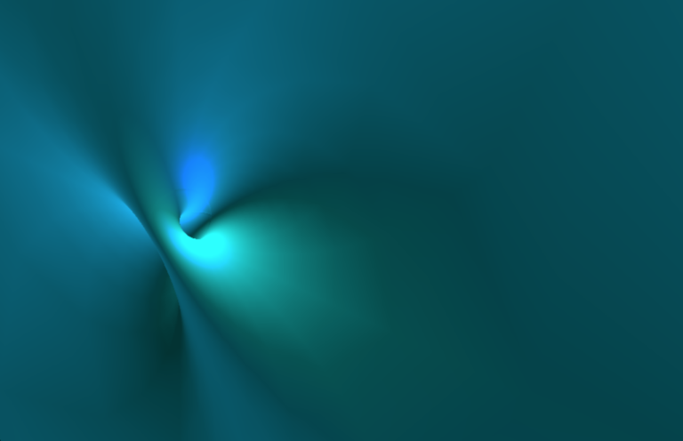

Rotations
A rotation in 2 dimensions leaves one single point stationary. A rotation in 3 dimensions leaves an axis stationary. A rotation in 4 dimensions leaves a plane stationary. So in 4d everything rotates around a plane. Now we can additionally choose to rotate that stationary plane, thereby doing 2 planar rotations at once. I believe this is what is referred to as an isoclinic or Clifford rotation, whereby you have a pair of rotating orthogonal 2 planes that intersect only at one point. [3]
Hopf Circles, Hopf Fibrations, Hopf Links
The intersection of a complex line in C² containing the origin, with S³ is a circle. This is true for every line passing through the origin whose equation is of the form z₂=a*z₁ where a is a complex number and z₂ and z₁ are the coordinates of C². By 'line' we mean one-dimensional subspace which we can think of as a plane. Thus there is a circle in S³ for each complex number a (including the case where a is infinite). The sphere S³ is therefore filled with circles, one for each point of S², that is, for each complex number a. (The as fill all of C¹ which we can identify with the Riemann Sphere). As Thurston says "exactly one Hopf circle passes through each point of S³" and "the three-sphere is a two-sphere's worth of circles".[4]
(Note: A complex line in C² is a one dimensional subspace thereof. We can visualize a complex line in C² by imagining a plane in R⁴, but not all planes in R⁴ are one dimensional subspaces of C². [1])
The Hopf fibration is this map from the unit 3-sphere to the unit 2-sphere. (This is different than stereographic project to R³!).
- The inverse image of each point on the 2-sphere is a circle. Thus, these images decompose the 3-sphere into a continuous family of circles, and each two distinct circles form a Hopf link. The linking is what makes the fibration a non-trivial fibration.[9]
- The inverse image of a circle of latitude on S² under the fiber map is a torus, and these project to nested toruses in R³ which fill space. The individual fibers link to Villarceau circles on these tori with the exception of the circle through the projection point and the one through its opposite point: the former maps to a straight line, the latter to a unit circle perpendicular to, and centered on, this line, which may be viewed as a degenerate torus whose radius has shrunken to zero. Every other fiber image encircles the line as well, and so, by symmetry, each circle is linked through every circle, both in R³ and in S³. Two such linking circles form a Hopf link in R³ [10]
The n-dimensional complex project space CPⁿ is the set of all complex lines on Cⁿ⁺¹ passing through the origin. [2] Thus C² projects to CP¹, the Riemann sphere. Homogenous coordinates represent the same point in the projective space. As we saw above a=z₂/z₁, and each value of a specifies a different set of homogeneous coordinates, therefore a line through the origin of C² maps to a point in CP¹. CP¹ is the set of all complex one-dimensional subspaces of C². A fancier way to say it, as Wikipedia does is: "CP¹ is the quotient of C²\{0} by the equivalence relation which identifies (z₀, z₁) with (λ z₀, λ z₁) for any nonzero complex number λ. On any complex line in C² there is a circle of unit norm, and so the restriction of the quotient map to the points of unit norm is a fibration of S³ over CP¹."
Stereographic Projection from S³ to R³
So the Hopf fibration can be thought of as a map from S³ to CP¹, or to S². But that is not really a visualization tool at all, it is just a map. To visualize entities embedded in S³ we can stereographically project to R³. I'm not going to summarize how to do that, because it is in a million places on the web, e.g. [7].
Under stereographic projection of S³ to R³,
- Radial planes in R³ correspond to 2-spheres through N (the north pole, i.e. infinity in R³) in S³.
- The equator of S³ projects to a sphere, S², of radius 1 centered at the origin of R³.
I initially confused Hopf Circles with Great circles and C² with R⁴. Not every two dimensional plane in R⁴ is a one dimensional subspace of C². Any plane in R⁴ that goes through the origin intersects S³ in a great circle. But Hopf circles are the intersections of complex lines with S³. Note that unlike for S², two great circles need not intersect in S³.
Entities embedded in S³
1. Clifford Torus.
This is a flat torus that lives in R⁴ and is embedded in S³. "Flat" means it has zero Gaussian curvature everywhere. By "embedded in S³", we mean that all points on the surface are unit distance from the origin. So both of these statements are mind-bending but also strangely intuitive. If you use the standard formula for a Clifford Torus and perform stereographic projection:
// Clifford Torus Parameterization
var f=1/Math.sqrt(2);
var xx=f*Math.cos(u);
var yy=f*Math.sin(u);
var zz=f*Math.cos(v);
var rr=f*Math.sin(v);
// Stereographic projection:
var x=xx/(1-rr);
var y=yy/(1-rr);
var z=zz/(1-rr);you get… a donut:

However, if you rotate the projection point:
var xx = Math.cos(u+theta) *Math.cos(v+phi);
var yy = Math.cos(u+theta) *Math.sin(v+phi);
var zz = Math.sin(u+theta) *Math.cos(v+phi);
var rr = Math.sin(u+theta) *Math.sin(v+phi);you get something that looks like a plane with handles:

I got these formulas from "Sculptures in S³" by Saul Schleimer and Henry Segerman, which is a very interesting paper with many practical (as in fun) applications.
This plane with handles has more structure than it seem, so I left some gaps in the surface which brings out the structure more:

A Clifford torus divides the 3-sphere into 2 solid tori. This was hard for me to grasp initially. But if you consider the surface of the donut above (the Clifford torus is a surface), it in-fact divides R³ into 2 solid tori. It is clear that the inside of the donut is a solid torus, but the outside is also a solid torus in the pre-image of the projection, i.e. in S³. Perhaps a little sloppy, but that's the intuition.
There are other fun parameterizations in the Segerman/Schleimer paper. Here are a few I coded up:
Inverted (3,11) Torus Knot from Robert Woodley on Vimeo.
Trefoil on S3 from Robert Woodley on Vimeo.
Trefoil on S3, II. from Robert Woodley on Vimeo.
References:
[1] https://math.stackexchange.com/questions/1265551/how-to-verify-whether-r2-is-a-subspace-of-the-complex-vector-space-c2
[2] http://www.math.poly.edu/courses/projective_geometry/chapter_three/node1.html
[3] http://eusebeia.dyndns.org/4d/vis/10-rot-1
[4] Three-dimensional Geometry and Topology, Volume 1. page 103.
[5] http://emerald.tufts.edu/~gwalsh01/dissertationfinal.pdf
[6] Topology, Geometry, and Gauge Fields, Foundations – Gregory Naber, page 17.
[7] Sculptures in S3. Saul Schleimer and Henry Segerman. https://arxiv.org/pdf/1204.4952.pdf
[8] https://en.wikipedia.org/wiki/Villarceau_circles
[9] https://en.wikipedia.org/wiki/Hopf_link
[10] https://en.wikipedia.org/wiki/Hopf_fibration
 Intuition for Semi-Direct Products
Dolly Zoom using Möbius Transforms
Intuition for Semi-Direct Products
Dolly Zoom using Möbius Transforms